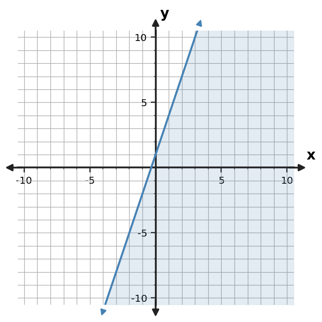

Algebra Check Your Understanding 3.4
1. Write an inequality represented by the shaded graph. Include the correct inequality symbol.

2. For $y \le -x+4$, state whether the boundary is solid or dashed and which side of the line is shaded.
3. Use the test-point table to decide whether $(1,4)$ belongs in the solution region for $y \le x+1$.
| Test point | Left side y | Boundary value | Satisfies? |
|---|---|---|---|
| (1,4) | 4 | 2 | No |
4. Construct the graph of $y \lt x+5$ with the correct boundary style and shaded half-plane.
5. Write an inequality represented by the shaded graph. Include the correct inequality symbol.

6. A student graphs $y \ge -3x+3$ with a solid boundary and shades below. Critique the graph and state the needed correction.